03 · ROBOTICS & MOBILITY · TEAM PROJECT
CartX
An adaptive luggage cart that follows independent travellers through the airport.
CartX is a robotic airport cart designed for travellers managing luggage without assistance. It combines adjustable storage with indoor positioning, following, and navigation modes so the cart can support different parts of a journey without demanding another hand.
The project was developed as a four-person engineering design team project. My work contributed to the product concept, interaction flow, physical design, prototyping, testing, and final communication.

Team Project · User Research · Product Design · Robotics Prototyping · Interaction Design
01
The airport asks travellers to manage too much at once
Luggage, wayfinding, documents, and changing terrain compete for the same attention.
Independent international travellers often move between entrances, check-in counters, shops, security, and boarding gates while carrying several bags. Interviews and observation highlighted recurring friction: carts are not always nearby, conventional trolleys occupy both hands, and navigating a large terminal becomes harder when the traveller must constantly manage luggage.
CartX focuses on the part of the journey before luggage drop-off and during transfers, when mobility and attention are most constrained.
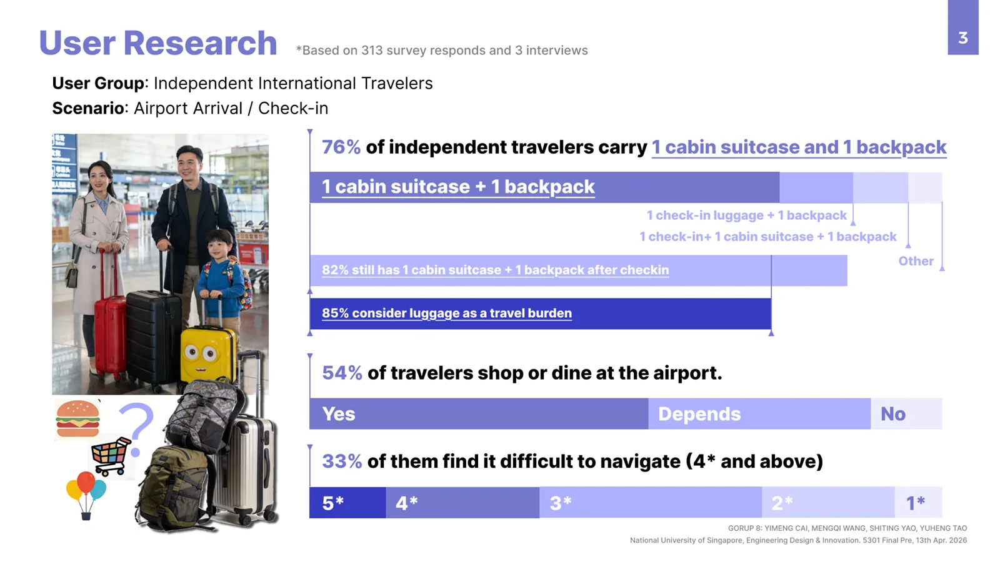
02
One cart,
changing capacity
The storage volume changes with the luggage instead of fixing the traveller to one trolley size.
A telescopic internal frame and layered shell allow the body to rise from a compact carrier for cabin luggage to a taller enclosure for larger suitcases. A rolling front panel opens the loading area, while the lower frame keeps the centre of mass close to the floor.
The closed body protects luggage and gives the cart a clear front and back, making its autonomous movement easier for people nearby to read. Warning lights and status indicators communicate when the cart is moving or waiting.
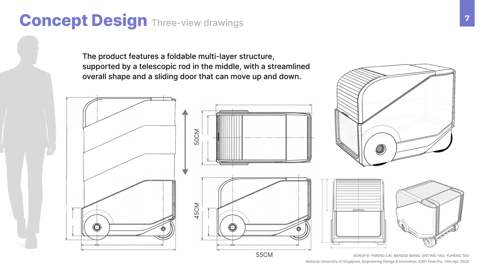
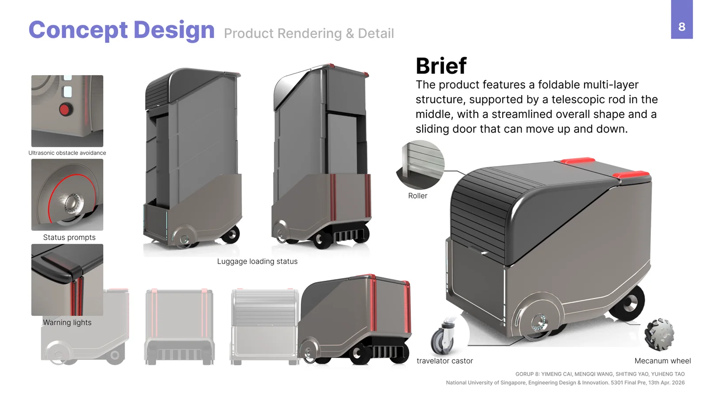
03
Pair once,
then move together
The service links the cart to a traveller’s phone before it enters a following or navigation mode.
A traveller scans a QR code on an available cart, confirms the pairing, and selects the amount of storage needed. During transfers through the terminal, the cart follows at a controlled distance. When the traveller wants to visit a shop, café, or gate, the app can pass a destination to the cart and display the route.
The same service supports boarding-pass scanning, cart recall, payment, and return. These functions were organised around a simple journey rather than presented as separate technology features.
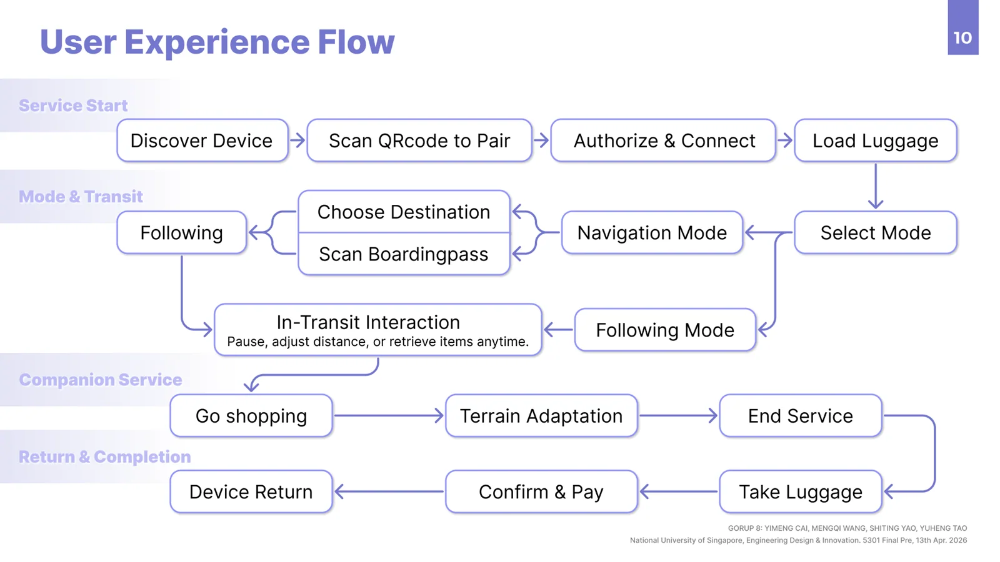
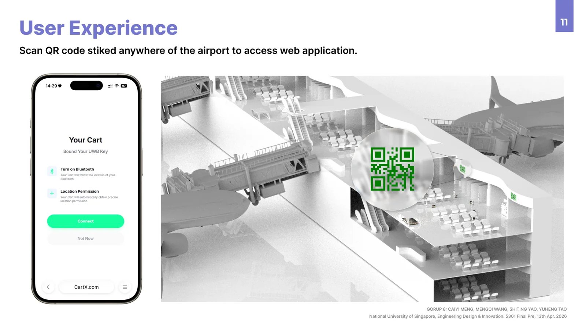
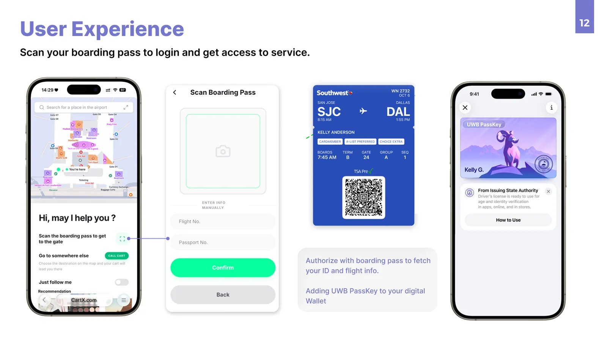
04
Following nearby.
Navigating ahead.
Two movement modes respond to different levels of traveller attention.
In following mode, the cart maintains a short distance behind the paired traveller. For destination-based navigation, it can move ahead at a controlled distance while the phone provides a parallel route and status view.
The concept combines ultra-wideband positioning for relative location with lidar-based mapping for indoor navigation. Mecanum wheels support lateral correction in narrow terminal spaces. These systems were developed as a functional prototype and tested at reduced scale, rather than validated as a production-ready autonomous vehicle.
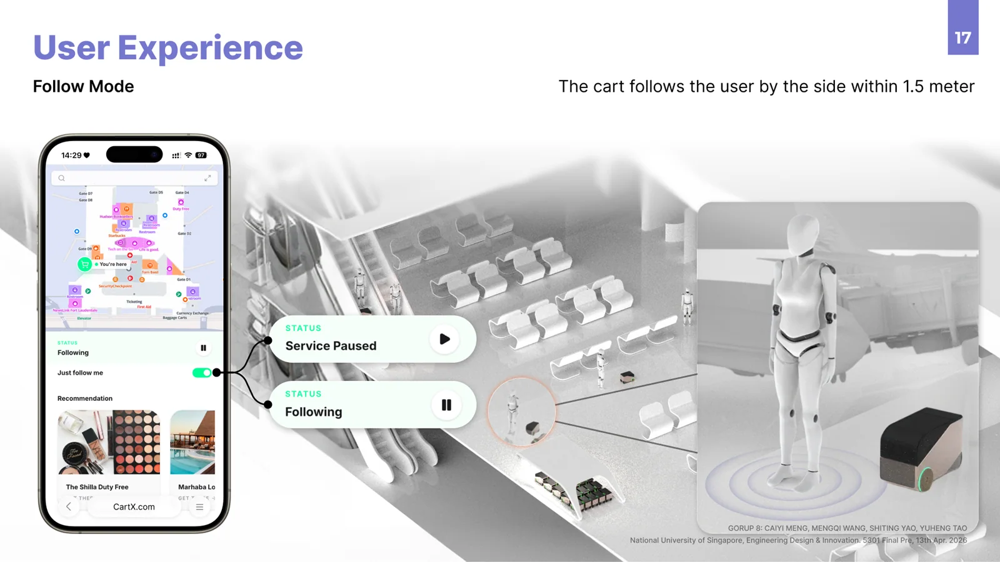
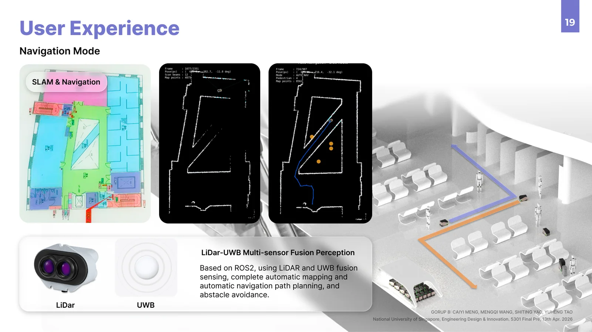
05
Designing for constrained movement
The chassis had to turn, translate, carry weight, and remain understandable around people.
The mobility platform uses independently driven wheels to manoeuvre through tight indoor environments. Prototypes tested the mechanical layout, extendable body, sensing position, and relationship between the outer enclosure and the mobile base.
A removable battery system supports charging and service between journeys. The engineering layout remained accessible during development so that navigation, power, and structure could be tested independently before integration.
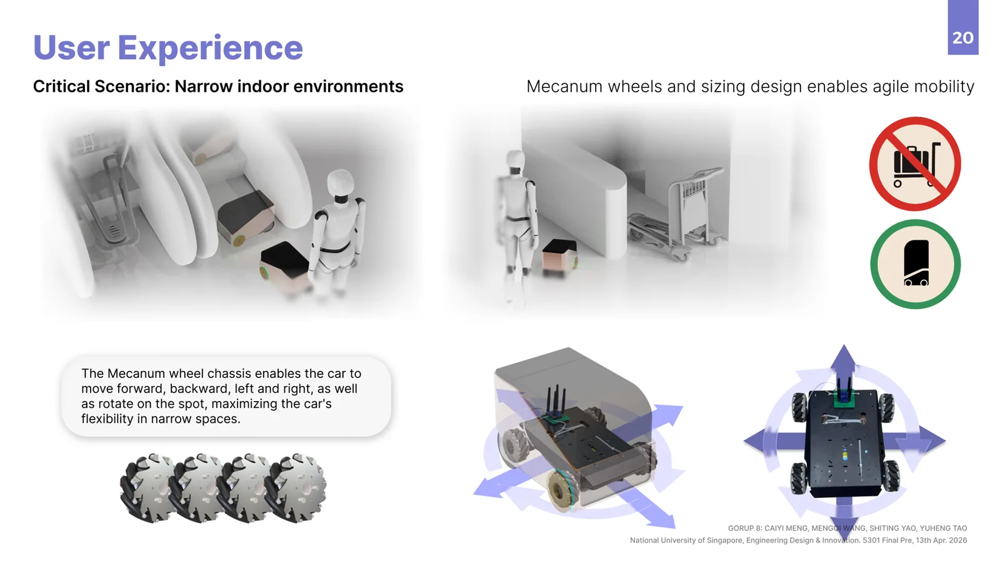
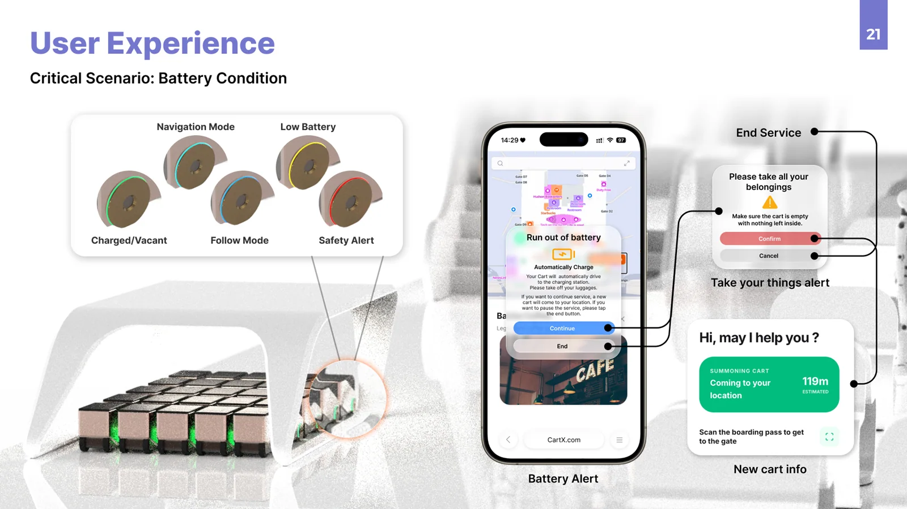
06
A working prototype
on the move
Full-scale form studies and a mobile test platform brought the service scenario into physical space.
The final prototype demonstrated the expandable luggage volume and basic following and navigation behaviour. Corridor tests examined whether the cart could maintain a usable relationship to a walking person and whether the internal volume could carry representative luggage.
The tests confirmed the central interaction but also exposed the next engineering priority: more stable sensing and smoother response around turns, occlusion, and changing walking speed.
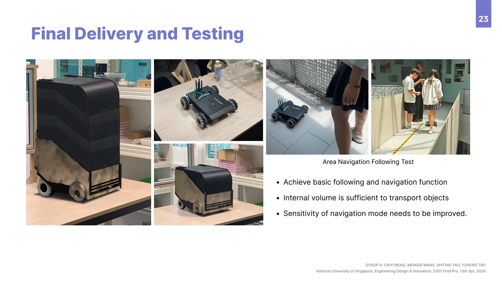
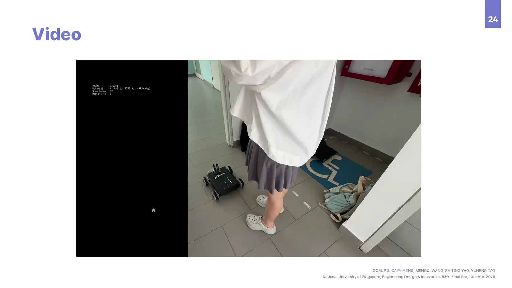
07
Mobility that gives
attention back
CartX explores how a robotic product can carry more than luggage by reducing the continuous effort of managing it.
The project connects expandable storage, a readable product form, and several levels of autonomy in one airport service. Its strongest contribution is the relationship between traveller and cart: close enough to feel available, independent enough to free the traveller’s hands and attention.
Further work would focus on navigation reliability, safety behaviour around crowds, airport operations, and a lighter expandable enclosure.
Team: Yimeng Cai, Mengqi Wang, Shiting Yao, and Yuheng Tao. My contribution: research synthesis, product concept, industrial design, interaction flow, prototyping, testing, and visual communication.